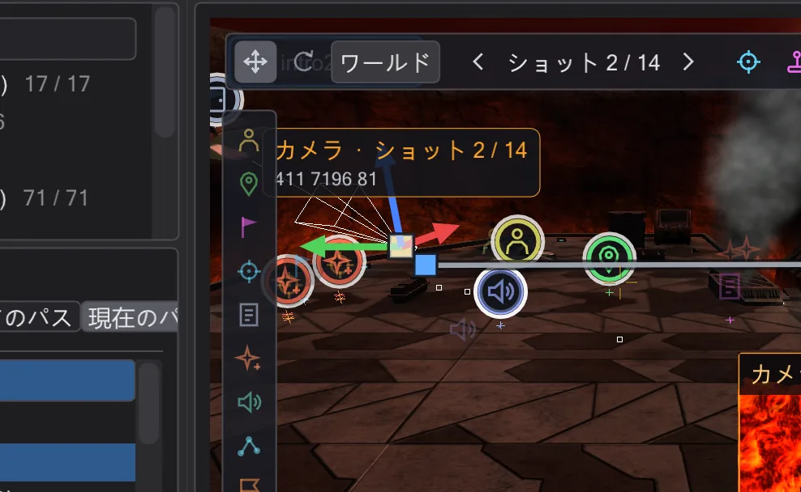
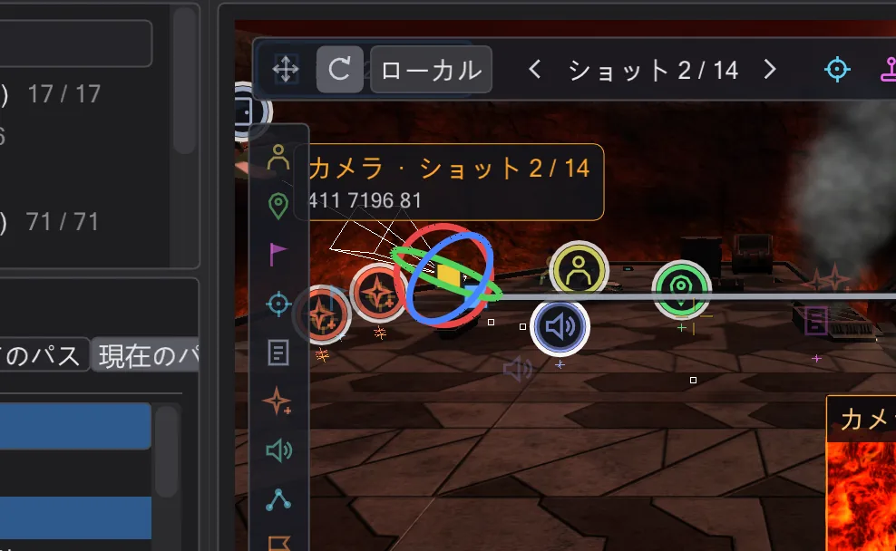

カメラ
スクリプトの camera MOVE と PAN はすべて、見て・つかんで・飛ばせるショットです。ドラッグするとスクリプトが書き換わります。

ショット#
ICARUS ではショットは camera ( MOVE, <位置>, <時間> ) と、それに続く camera ( PAN, <角度>, <時間> ) です。BehavEd-Remake はそれを順に読み、マップ上にカメラ記号として描きます。記号をクリックするとカメラが選択され、左の ショット 一覧に各ショットの時刻と移動時間(移動 6.0 秒)が表示されます。行をクリックするとそこへ移動します。
- 前のショット / 次のショット でショットを順に切り替え、ショットへ移動 で視点を選択中のショットの位置と向きにぴったり合わせます。
- ここに新しいショット は現在の視点に MOVE と PAN を、選択中のショットの後ろに追加します。ビューに合わせる は選択中のショットを今見ている位置に移します。
- ショットを削除 で削除します。選択中のショット では 位置・向き・移動時間(0 = カット)を正確に入力できます。
ショットの移動と回転#
ビュー上部のツールバーでギズモを切り替えます。移動 は 3 本の矢印と中央の箱を表示し、矢印のドラッグで 1 軸に沿って、箱のドラッグで画面の平面内を移動します。回転 はピッチ・ヨー・ロールの 3 つのリングを表示します。ワールド / ローカル で矢印がマップとカメラのどちらに従うかを決めます。離すと新しい値がスクリプトに書かれます(1 回の元に戻す)。




ギズモをつかんだときタイムラインが 2 つのキーの間にあれば、始点を変えるのではなく、その時刻に新しいキーが作られます。アニメーションソフトのオートキーと同じです。操縦中は Enter でも同じようにキーを設定できます(ショットを自分で飛ばす(操縦))。
カメラパス#
選択したカメラはパスを描きます。通過済みの部分は黄色、残りは灰色です。ショットが多いと見づらくなるので、現在のパス は現在のショットへの移動と次への移動だけを、すべてのパス はすべての移動を表示します。どちらもカメラパネルにあります。
ショットを自分で飛ばす(操縦)#
操縦 でショットの中に入ります。右ボタンを押したまま見回し、W A S D で移動、Q E で下降・上昇します。適用 で視点をスクリプトに書き、Esc で取り消します。操縦中にタイムラインを進めて Enter(キーを設定)を押すと、道に沿ってキーを次々に設定できます。操縦中はショットのズームが使われ、ゲーム画面の枠が表示されるので、ゲームで映るとおりに構図を決められます。
プレビューとカメラ視点#
カメラプレビュー(選択したカメラのバー、ビュー左上)は、カメラから見た小さな画像をビュー右下に表示し、ドラッグ中もギズモに追従します。画像をクリックするとカメラ視点で大きく表示され、そのままタイムラインを再生すると、ゲームと同じようにカットシーンが見られます。同じバーの カメラ視点 でも直接カメラ視点にできます。
ゲームが映すもの。 ゲームはカメラの視野角を自分のウィンドウに合わせて計算します。そのためカメラ視点では、画面がゲームのアスペクト比の枠の中に収まります。枠の外は黒、シネマバーとフェードは枠の中で、プレイヤーが見る画面そのものです。アスペクト比と cg_fovAspectAdjust は 表示設定 → ゲーム画面 で設定します。「自動」は設定のゲームのルールに従います(設定)。Movie Duels はデスクトップの解像度で cg_fovAspectAdjust 1(ZOOM は縦の角度を保ち、ワイド画面では左右がより広く見えます)、OpenJK は 800x600 で 0(ZOOM は横の角度)で始まります。分からなければ、ゲームのコンソールに cg_fovAspectAdjust と r_mode と入力してください。フリービューでは、ここに置いたカメラが映す範囲を明るい枠が示します(ズーム 90)。自由視点でゲーム枠を表示 でオフにできます。camera ( ENABLE ) の前と DISABLE の後、ゲームはプレイヤーの視点を cg_fov 80 で映します。カメラを自分で切り替えるスクリプトでは、再生とプレビューも同じです。ROLL は画面を傾け、camera ( PATH, ... ) は記録された ROFF のパスを、cut・fov・fovzoom・fovaccel のノートも含めて飛びます。
 アニメーション
アニメーションref_tag の上に置かれたショットや、それを注視するショットもあります。その場合はパネルに表示され、ショットを動かすとマップ上の ref_tag が動きます。スクリプトは名前を参照しているだけです。